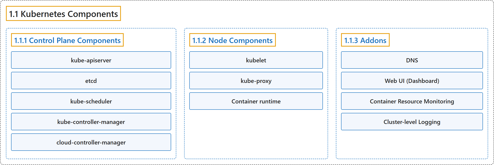

1.1 Kubernetes Components
Classification

Glossary
| Term | Definition | 中文翻译 | Source |
|---|---|---|---|
| 1.1 Kubernetes Components Kubernetes 组件 |
(context) "An overview of the key components that make up a Kubernetes cluster." | （语境）概述关键组件，这些组件构成 Kubernetes 集群。 | The Kubernetes Authors, n.d., "Kubernetes Components", para. 1 |
| 1.1.1 Control Plane Components 控制平面组件 |
"Manage the overall state of the cluster:" | 管理集群的整体状态： | The Kubernetes Authors, n.d., "Control Plane Components", para. 1 |
| kube-apiserver kube-apiserver |
"The core component server that exposes the Kubernetes HTTP API." | 核心组件服务器，暴露 Kubernetes HTTP API。 | The Kubernetes Authors, n.d., "Control Plane Components", para. 3 |
| etcd etcd |
"Consistent and highly-available key value store for all API server data." | 一致且高可用的键值存储，存放所有 API 服务器数据。 | The Kubernetes Authors, n.d., "Control Plane Components", para. 5 |
| kube-scheduler kube-scheduler |
"Looks for Pods not yet bound to a node, and assigns each Pod to a suitable node." | 寻找尚未绑定到节点的 Pod，并为每个 Pod 分配合适的节点。 | The Kubernetes Authors, n.d., "Control Plane Components", para. 7 |
| kube-controller-manager kube-controller-manager |
"Runs controllers to implement Kubernetes API behavior." | 运行控制器来实现 Kubernetes API 的行为。 | The Kubernetes Authors, n.d., "Control Plane Components", para. 9 |
| cloud-controller-manager cloud-controller-manager |
"Integrates with underlying cloud provider(s)." | 集成到底层云服务商。 | The Kubernetes Authors, n.d., "Control Plane Components", para. 11 |
| 1.1.2 Node Components 节点组件 |
"Run on every node, maintaining running pods and providing the Kubernetes runtime environment:" | 在每个节点上运行，维护运行中的 Pod 并提供 Kubernetes 运行时环境： | The Kubernetes Authors, n.d., "Node Components", para. 1 |
| kubelet kubelet |
"Ensures that Pods are running, including their containers." | 确保 Pod 正在运行，包括其中的容器。 | The Kubernetes Authors, n.d., "Node Components", para. 3 |
| kube-proxy kube-proxy |
"Maintains network rules on nodes to implement Services." | 维护节点上的网络规则，以实现 Service。 | The Kubernetes Authors, n.d., "Node Components", para. 5 |
| Container runtime 容器运行时 |
"Software responsible for running containers." | 软件，负责运行容器。 | The Kubernetes Authors, n.d., "Node Components", para. 7 |
| 1.1.3 Addons 插件 |
"Addons extend the functionality of Kubernetes." | 插件扩展 Kubernetes 的功能。 | The Kubernetes Authors, n.d., "Addons", para. 1 |
| DNS DNS |
"For cluster-wide DNS resolution." | 用于集群范围的 DNS 解析。 | The Kubernetes Authors, n.d., "Addons", para. 3 |
| Web UI (Dashboard) Web 界面（仪表板） |
"For cluster management via a web interface." | 用于集群管理，经由 Web 界面。 | The Kubernetes Authors, n.d., "Addons", para. 5 |
| Container Resource Monitoring 容器资源监控 |
"For collecting and storing container metrics." | 用于收集和存储容器指标。 | The Kubernetes Authors, n.d., "Addons", para. 7 |
| Cluster-level Logging 集群级日志 |
"For saving container logs to a central log store." | 用于保存容器日志到集中的日志存储。 | The Kubernetes Authors, n.d., "Addons", para. 9 |
References
The Kubernetes Authors. (n.d.). Kubernetes Components. Kubernetes Documentation. Retrieved October 31, 2026, from https://kubernetes.io/docs/concepts/overview/components/